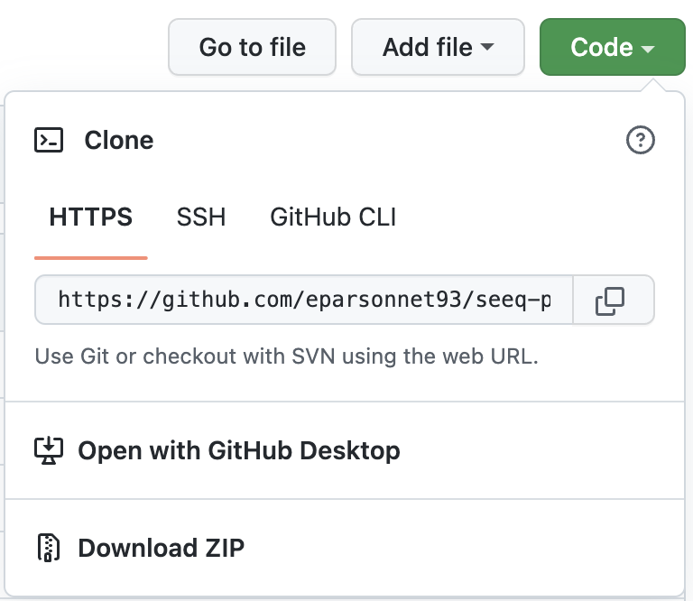
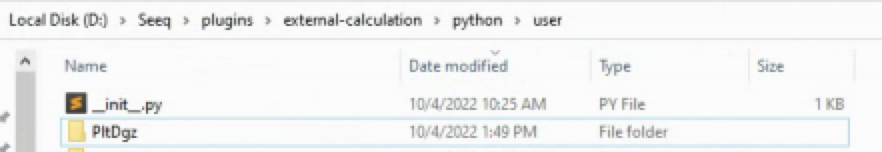

Installing Plot Digitizer
The latest build of the project can be found here as a wheel file. The file is published as a courtesy to the user, and it does not imply any obligation for support from the publisher.
Requires Seeq >= R56
Installation Instructions
Here is a short overview video explaining the installation of Plot Digitzer in Seeq
Plot Digitizer in Seeq
Install the required external calculation scripts.
a. Manually download the Plot Digitizer repository. To do so, click the green
Codebutton, then Download ZIPb. Unzip repository after downloading
c. Open the
external_calculation(i.e.,seeq-plot-digitizer/external_calculation) folder from the repository you just downloaded.d. Move (or copy and paste) the
PltDgzfolder and its contents to thepython/userexternal calculation folder on the machine where Seeq server is running, (this is typicallyC:/Seeq/plugins/external-calculation/python/user/or similar).Very Important! Once the
PltDgzfolder is created, be sure to never delete it. If you wish to make changes to the scripts contained therein, be sure to change the scripts themselves, never deleting, nor changing the name of thePltDgzfolder!Create a new Seeq Data Lab project and open the Terminal window
(In SDL Terminal) Run
pip install seeq-plot-digitizer(In SDL Terminal) Run
python -m seeq.addons.plot_digitizer [--users <users_list> --groups <groups_list>]. Then follow the prompt.